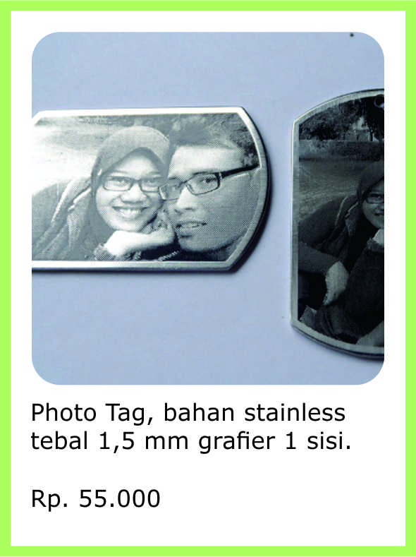
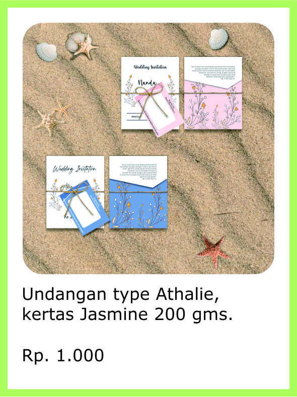
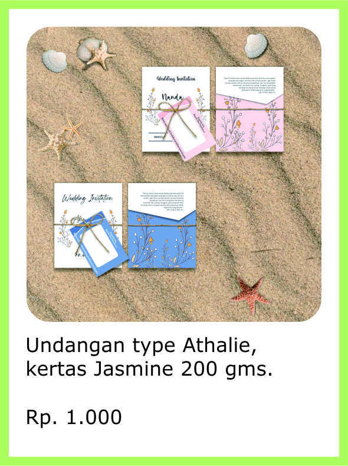
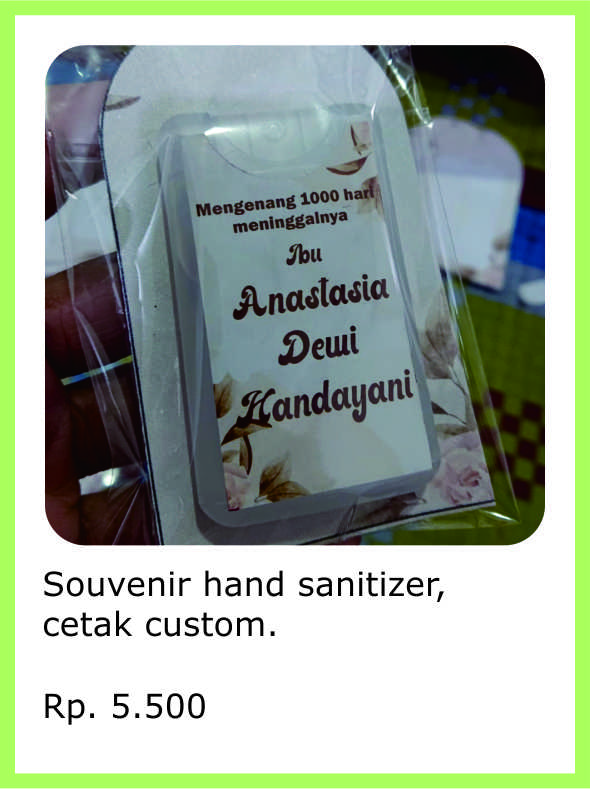
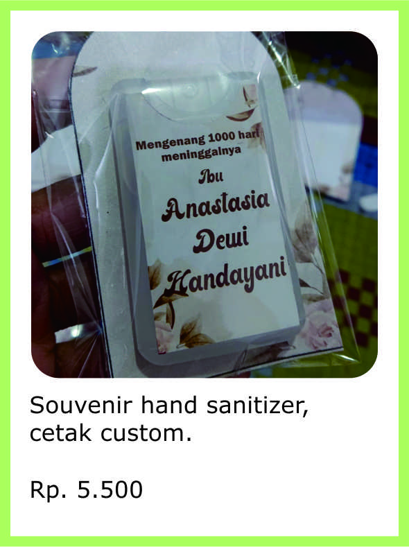

 


 


Beranda
Selamat datang dan selamat berkunjung ditoko kami. Salam, sapa, dan senyum dari kami selalu menghiasi awal halaman web kami. Semoga Anda dalam kondisi yang terbaik saat ini. Sehat, dan diberikan kelancaran rezeki.
Perkenalkan, kami adalah produsen untuk produk-produk tepat guna yang berskala home industri, produk-produk yang dihasilkan dari berbagai bahan dasar. Antara lain :
1. Produk logam.
Produk logam yang kami hasilkan adalah produk yang kami buat dengan cara grafier, atau dibuat dengan teknik engrave etch/etsa. Dan juga dibuat dengan cara di cut atau potong. baik potong lurus ataupun potong lekuk sesuai pola.
Ketebalan bahan stainless yang gunakan memiliki ketebalan mualai dari 0,5 mm - 1,5 mm. Ketebalan plat stainless tergantung kebutuhan dan permintaan konsumen.
Bahan logam yang kami gunakan antara lain :
- Stainless steel seri 430 dan 304 (tebal variatif sesuai kebutuhan).
- Kuningan (tebal variatif sesuai kebutuhan).
- Aluminium (tebal variatif sesuai kebutuhan).
Selain di grafier, potong, kami juga membuat produk ini diwarnai dengan cat khusus untuk produk-produk tertentu. Biasanya untuk kebutuhan yang memiliki logo. Baik itu logo perusahaan, logo komunitas, dll.
Produk-produk yang kami hasilkan dari bahan logam antara lain :
- Name tag.
- Dog tag/kalung army.
- Photo tag.
- Kalung nama.
- Pet tag (kalung hewan peliharaan).
- Nomor mesin.
- Safety sign.
- dll.
2. Produk kertas.
Produk kertas yang kami hasilkan adalah produk yang kami buat dengan cara dicetak atau di print.
Produk-produk yang kami hasilkan dari bahan kertas terbagi antara lain :
- Undangan.
- Souvenir.
- Kalender.
- Kupon pengambilan souvenir.
- Nota penjualan/bon.
- dll.
3. Produk akrilik.
Produk akrilik yang kami hasilkan adalah produk yang kami buat dengan cara dicetak atau di print, cut/potong, lapis resin. Ketebalan bahan mulai dari 1 mm hingga kete- balan 10 mm tergantung penggunaan dan permintaan konsumen.
Produk-produk yang kami hasilkan dari bahan akrilik antara lain :
- Name tag.
- Safety sign.
- Gantungan kunci, ini juga bisa menjadi souvenir.
- Plakat.
- Kalung hewan peliharaan.
- dll.
4. Produk resin.
Produk resin yang kami hasilkan adalah produk yang kami buat dnegan cara dicetak menggunakan mal ataupun mattress.Biasanya hasil akhir produk ini adalah kombina- si antara resin dan logam. Walaupun terkadang tidak ada penggunaan logamnya.
Produk yang kami hasilkan dari bahan akrilik antara lain :
- Name tag.
- Plakat/kenang-kenangan.
5. Produk stiker.
Produk stiker yang kami hasilkan adalah produk yang kami buat dengan cara di print, cut, ataupun kombinasi keduanya, yaitu print and cut. Hasil akhir produk stiker sebe- narnya sangatlah luas. Maka dari itu, hasil akhir tersebut belum dapat kami imple- mentasikan semuanya pada produk-produk yang memang sangatlah luas tersebut.
Oleh sebab itu, kami menerima kosultasi mengenai produk yang akan konsumen inginkan. Tentunya diluar list produk yang kami buat. Dengan senang hati kami akan membantu, setidaknya dalam ide, olah pikir, dan saran.
Produk-produk yang kami hasilkan dari bahan stiker antara lain :
- Label untuk makanan.
- Safety sign.
- Cutting stiker.
- dll.